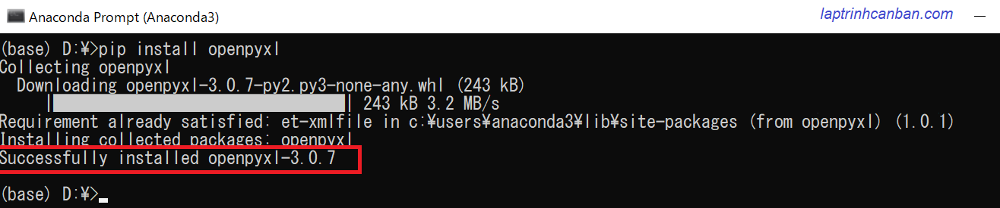
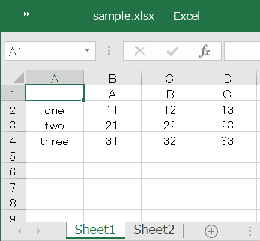

Hướng dẫn cách xử lý file excel trong python. Bạn sẽ học được cách cài openpyxl và dùng module này để đọc file excel trong python cũng như là để trích xuất dữ liệu từ file Excel bằng Python sau bài học này.
- Bài viết liên quan: Ghi dữ liệu vào file Excel trong Python.
Cách cài openpyxl trong python
Cài openpyxl bằng pip install openpyxl
Để thực hiện các xử lý file excel trong python, chúng ta cần cài module openpyxl vào trong máy tính bằng cách sử dụng pip trên màn hình Anaconda Prompt như sau:
pip install openpyxl

Bạn có thể thấy version của openpyxl đã được cài như trong khung đỏ trên ảnh ở trên. Sau khi cài openpyxl, chúng ta có thể thực hiện các xử lý file excel trong python bằng openpyxl.
Nếu không muốn sử dụng module này nữa, bạn cũng có thể xóa openpyxl từ máy tính cũng bằng cách sử dụng pip như sau:
pip uninstall openpyxl

Các class hỗ trợ xử lý file excel trong module openpyxl
Để xử lý file excel, module openpyxl tích hợp 3 class sau:
| Tên Class | Định nghĩa |
|---|---|
| Workbook | Toàn bộ file excel |
| Worksheet | Một sheet trong file excel |
| Cell | Một ô trong sheet |
Trong mỗi class sẽ hỗ trợ những phương thức khác nhau giúp chúng ta xử lý file excel trong python
Đọc file excel trong python | openpyxl
Đọc toàn bộ file excel bằng python
Giả sử chúng ta có một file excel có tên sample.xlsx gồm 2 sheet, với Sheet1 có nội dung sau đây:

Để xử lý file exel này, trước hết chúng ta cần import openpyxl vào chương trình. Ngoài ra để in ra màn hình kết quả cho dễ nhìn, bạn hãy import thêm module pprint như sau:
import openpyxl |
Sau đó, hãy tạo ra một object của class Workbook chứa toàn bộ nội dung file excel bằng cách dùng openpyxl.load_workbook() như sau:
wb = openpyxl.load_workbook('./user/sample.xlsx') |
Sau khi tạo xong workbook object, chúng ta có thể dùng các phương thức tích hợp trong class workbook để xử lý file excel với object đó, ví dụ như lấy toàn bộ tên sheet trong excel:
print(wb.sheetnames) |
Đọc một sheet trong file excel bằng python
Để xử lý một sheet trong file excel, chúng ta tạo một object của class worksheet chứa nội dung của sheet cần đọc bằng cách chỉ định tên sheet như sau:
sheet = wb['Sheet1'] |
Sau khi tạo xong worksheet object, chúng ta có thể truy cập tới một ô trong worksheet đó, ví như A2, B3.. bằng cách tạo ra một object của class cell chứa nội dung của ô đó như sau:
cellA2 = sheet['A2'] |
Đọc một ô trong file excel bằng python
Sau khi tạo xong một cell object, chúng ta có thể sử dụng các phương thức tích hợp trong class cell để xử lý object vừa tạo, ví dụ như lấy giá trị của ô đó:
cell = sheet['A2'] |
Ngoài cách chỉ định tên ô ở trên , chúng ta cũng có thể lấy giá trị của ô bằng cách chỉ định vị trí của ô đó trong sheet thông qua [hàng - cột ] của ô đó như sau:
cell = sheet.cell(row=2, column=1) |
Đọc các ô tại một phạm vi chỉ định trong sheet excel
Để đọc các ô tại một phạm vi chỉ định trong sheet excel , ví dụ như A2:C4 chẳng hạn, chúng ta cần chỉ định phạm vi này trong worksheet object đã tạo ở trên và lấy ra từ worksheet toàn bộ các ô trong phạm vi đó dưới dạng một tuple như sau:
cells_tuple = sheet['A2:C4'] |
Sau khi đọc các cell đó dưới dạng tuple, bạn có thể sử dụng các thao tác với tuple để xử lý các cell này. Ví dụ lấy giá trị của một cell chỉ định bằng cách truy cập vào phần tử trong tuple như sau:
print(cells_tuple[0][1].value) |
- Xem thêm các cách xử lý tuple tại chuyên đề Tuple trong python
Ngoài cách sử dụng tuple, bạn cũng có thể lấy toàn bộ các ô trong phạn vi dưới dạng một list bằng cách dùng phương thức iter_rows() tích hợp trong class sheet để tạo ra một generator - một hàm dùng để tạo ra các trình lặp trong python. Sau đó dùng hàm list() trong python để biến generator trên thành một list, giống như dưới đây:
g = sheet.iter_rows(min_row=2, max_row=4, min_col=1, max_col=3) |
Sau khi đọc các cell đó dưới dạng list, bạn có thể sử dụng các thao tác với list để xử lý các cell này. Ví dụ lấy giá trị của một cell chỉ định bằng cách truy cập vào phần tử trong list như sau:
print(cells_list[0][1].value) |
- Xem thêm các cách xử lý list tại chuyên đề List trong python
Trích xuất dữ liệu từ file Excel bằng Python
Trích xuất toàn bộ giá trị các ô trong sheet excel bằng python
Bằng cách sử dụng thuộc tính values trong class Worksheet, chúng ta có thể tạo ra một generator - một hàm dùng để tạo ra các trình lặp trong python, rồi sau đó dùng class list để biến generator trên thành một list chứa toàn bộ giá trị các ô trong sheet excel như dưới đây:
g_all = sheet.values |
Chúng ta cũng có thể tự tạo ra một hàm lấy toàn bộ giá trị các ô trong sheet excel bằng cách sử dụng tới List comprehension trong python như sau:
def get_cell_value_list(sheet): |
Với cả hai cách trên đều cho ra cùng kết quả, toàn bộ giá trị các ô trong sheet được lấy ra dưới dạng một list 2 chiều trong python như sau:
[[None, 'A', 'B', 'C'], |
Lấy giá trị các ô tại một phạm vi chỉ định trong sheet excel
Nếu chúng ta chỉ muốn lấy giá trị các ô tại một phạm vi chỉ định trong sheet excel, thay vì đọc toàn bộ sheet và lấy ra toàn bộ giá trị của ô trong đó, chúng ta chỉ cần đọc các ô tại một phạm vi chỉ định như Kiyoshi đã hướng dẫn ở trên, và sau đó lấy ra các giá trị của ô tồn tại trong phạm vi đó là xong.
def get_cell_value_list(sheet): |
Kết quả, toàn bộ giá trị các ô tại phạm vi chỉ định trong sheet được lấy ra dưới dạng list hai chiều như sau:
[['one', 11, 12], |
Đếm số dòng có dữ liệu trong excel bằng python
Để đếm số dòng có dữ liệu trong excel bằng python, chúng ta sử dụng thuộc tính max_row trong class Workbook với cú pháp sau đây:
sheet.max_row
Ví dụ, chúng ta đếm số dòng có dữ liệu trong excel bằng python với mã lệnh sau đây:
wb = openpyxl.load_workbook('./user/sample.xlsx') |
Ứng dụng sheet.max_row, chúng ta có thể tạo ra một hàm đếm số dòng có dữ liệu và lấy tất cả dữ liệu đó ra trừ dòng header như sau:
def get_all_excel_infor(excel_filepath): |
Khi sử dụng hàm này, chúng ta chỉ cần chỉ định đối số là đường dẫn của file excel cần xử lý là xong.
all_excel_infor = get_all_excel_infor('./user/sample.xlsx') |
Đếm số cột có dữ liệu trong excel bằng python
Để đếm số cột có dữ liệu trong excel bằng python, chúng ta sử dụng thuộc tính max_column trong class Workbook với cú pháp sau đây:
sheet.max_column
Ví dụ, chúng ta đếm số cột có dữ liệu trong excel bằng python với mã lệnh sau đây:
wb = openpyxl.load_workbook('./user/sample.xlsx') |
Kết quả trả về sẽ là số cột lớn nhất có chứa dữ liệu trong file excel được chỉ định.
Tổng kết
Trên đây Kiyoshi đã hướng dẫn bạn về cách đọc file excel trong python rồi. Để nắm rõ nội dung bài học hơn, bạn hãy thực hành viết lại các ví dụ của ngày hôm nay nhé.
Và hãy theo dõi tiếp bài viết Ghi dữ liệu vào file Excel trong Python để hoàn toàn làm chủ các thao tác xử lý file excel trong python nhé.
URL Link
HOME › python cơ bản - lập trình python cho người mới bắt đầu>>17. csv excel json xml pdf